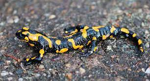

Habitad

Las salamandras viven en zonas húmedas o umbrías con vegetación mojada, bajo la hojarasca y siempre cerca de algún punto de agua. Necesitan estar cerca del agua por dos motivos.
Caracteristicas
es una especie de anfibio alargado y provisto de patas y cola
- Su piel es lisa y brillante
- color negro con manchas irregulares amarillas
- Come principalmente presas de unas medidas comprendidas entre 4 y 20 milímetros
- , son capaces de regenerar una y otra vez hasta su cerebro, corazón y médula espinal
menú